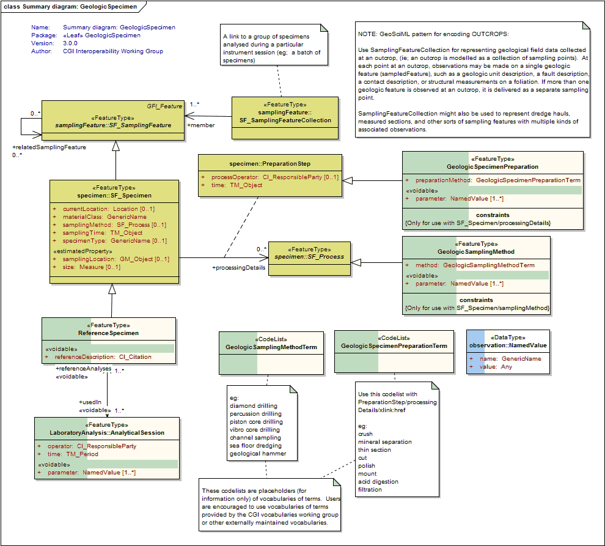
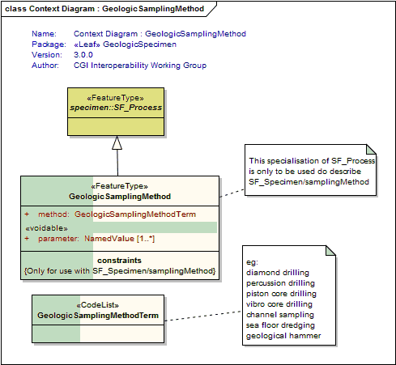
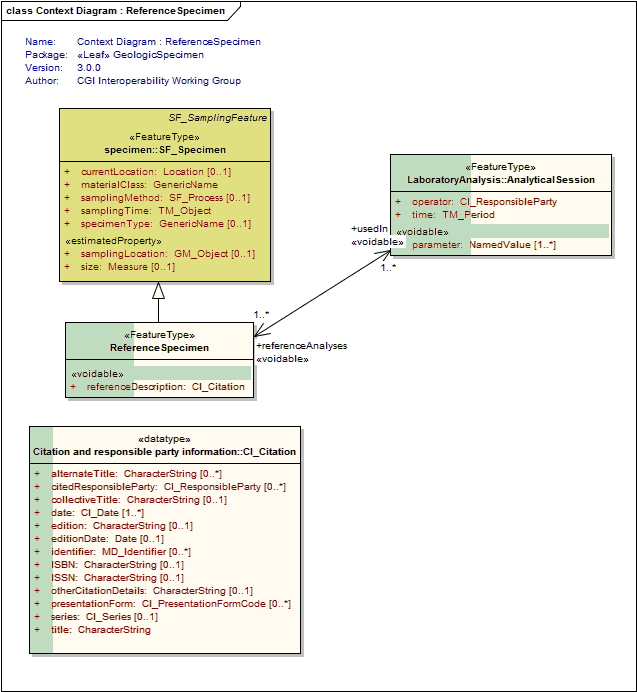

Package GeoSciML/LaboratoryAnalysis-Specimen/GeologicSpecimen
The GeologicSpecimen package extends the ISO19156 O&M schema, and describes processes relevant to the sampling, preparation and analysis of geologic specimens.
Class Summary |
|
| <<FeatureType>> Classes | |
GeologicSamplingMethod
<<FeatureType>>
|
Implementation of SF_Process to describe the method used to obtain a geologic specimen eg: diamond drilling percussion drilling piston core drilling vibro core drilling channel sampling sea floor dredging geological hammer |
GeologicSpecimenPreparation
<<FeatureType>>
|
An extension of OGC Specimen:PreparationStep to allow details of preparation steps to be delivered (eg, filtration and mesh size, chemical additives, crushing methods, drying parameters, etc) |
ReferenceSpecimen
<<FeatureType>>
|
A reference specimen is a specimen with known or accepted values of some property. The citation property describes the location of a published description of these values. Reference specimens include analytical blanks. Analytical results from a reference specimen analysed during an AnalyticalSession are delivered in the same way as the results of other specimens analysed in that session. |
| <<CodeList>> Classes | |
GeologicSamplingMethodTerm
<<CodeList>>
|
Refers to a vocabulary of terms describing the samplingProcess used to obtain or create the Specimen. eg: diamond drilling percussion drilling piston core drilling vibro core drilling channel sampling sea floor dredging crushing mineral separation melting geological hammer |
GeologicSpecimenPreparationTerm
<<CodeList>>
|
Refers to a vocabulary of terms to describe sample preparation applied to geologic specimens, typically in preparation for analytical processes like geochemistry or microscopy. eg: crush mineral separation thin section cut polish mount acid digestion |
Tagged Values |
||
| Tag | Value | Notes |
| xsdDocument | geologicSpecimen.xsd | Description: Name of an XML Schema document to create representing the content of this package |
| xsdEncodingRule | iso19136_2007 | Values: iso19136_2007 | iso19139_2007 | iso19136_2007_INSPIRE_Extensions Default: iso19136_2007 Description: XML Schema encoding rule to apply |
UML Diagram: Summary diagram: GeologicSpecimen

UML Diagram: Context Diagram : GeologicSamplingMethod

UML Diagram: Context Diagram : ReferenceSpecimen
